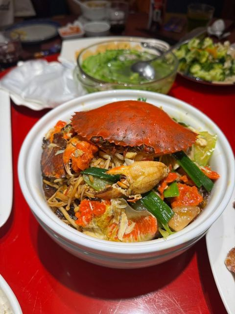
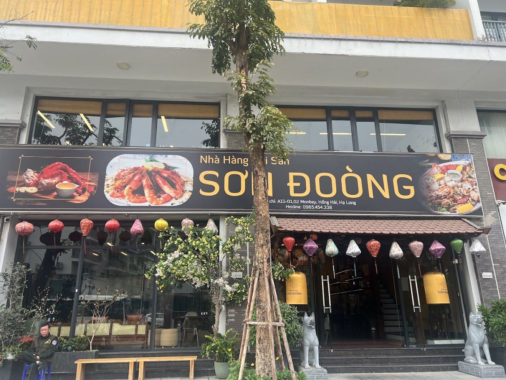
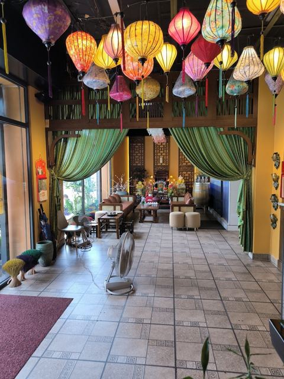
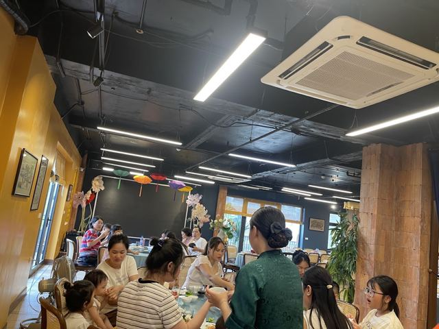

Cua sốt ớt ăn kèm bánh bao
Món được khách khen “hấp dẫn… nên thử”. Chấm bánh bao vào sốt là chuẩn.
Liên hệ để báo giáMonbay · Hạ Long · Quảng Ninh
Mâm hải sản tươi cho cả nhà và nhóm bạn: cua sốt ớt chấm bánh bao, bề bề, vịt quay, lẩu nóng. Không gian rộng, thoáng mát, có khu vui chơi cho trẻ và loa hát cho gia đình.
Giờ mở cửa10:00–22:00 mỗi ngày

Về nhà hàng
Sơn Đoòng nằm trong khu Monbay, Hạ Long. Đây là nơi các gia đình và nhóm bạn ghé ăn hải sản và món Việt. Khách hay khen không gian rộng rãi, thoáng đãng, mát mẻ, sạch sẽ và nhân viên phục vụ nhiệt tình.
Nhà hàng có khu vui chơi cho trẻ con và loa hát cho gia đình. Nhiều khách chọn gọi trước để đặt bàn và đặt món, đến nơi là có đồ ăn ngay.
“Hấp dẫn món cua sốt ớt sing ăn cùng bánh bao ngon mọi ng nên thử. Bề bề to chắc!” – Hương Ngô, Google


Không gian & tiện ích
“Không gian thoáng đãng, rộng rãi, mát mẻ” – theo đánh giá khách.
Bố mẹ ăn yên tâm, bé có chỗ chơi.
Phù hợp sinh nhật, họp mặt, liên hoan.
Gọi trước để món lên đúng giờ khi tới.
Hình ảnh thật
Ảnh khách chia sẻ trên Google Maps. Bấm để xem lớn.
Đánh giá Google
246 đánh giá trên Google Maps
“Không gian nhà hàng đẹp, thoáng đãng, sạch sẽ, đồ ăn ngon, nhân viên phục vụ nhiệt tình, giá cả ổn. Có cả khu vui chơi cho trẻ con.”
Thảo Phạm · ★★★★★
“Đồ ăn tươi ngon. Không gian thoáng đãng, mát mẻ, sạch sẽ, nhân viên phục vụ nhanh nhẹn, nhiệt tình. Có cả loa hát cho gia đình.”
Hoàng Anh Nguyễn · ★★★★★
“Nhà hàng không gian rộng rãi, bố trí hài hoà, nhà mình đã đặt món trước nên đồ lên k phải đợi lâu. Hấp dẫn món cua sốt ớt sing ăn cùng bánh bao ngon mọi ng nên thử. Bề bề to chắc!”
Hương Ngô · ★★★★★
“Không gian thoáng đãng, rộng rãi, mát mẻ, đồ ăn khá ổn nha mọi ng. Nhân viên thì nhiệt tình phục vụ chu đáo. Mọi ng nên đến trải nghiệm nha.”
Xuân Thanh · ★★★★★
Hỏi đáp
Theo Google Maps, nhà hàng mở 10:00–22:00 tất cả các ngày trong tuần.
Có. Khách đánh giá trên Google nhắc tới khu vui chơi cho trẻ con và loa hát cho gia đình.
Nên gọi 0965 454 338 để đặt bàn và đặt món trước, nhất là khi đi nhóm đông hoặc cuối tuần.
Liên hệ để báo giá. Nhà hàng sẽ tư vấn theo số khách và món bạn chọn.
A11 01 Monbay, Hạ Long, Quảng Ninh. Bấm “Chỉ đường” để mở Google Maps.
Ghé quán
A11 01 Monbay, Hạ Long, Quảng Ninh 20000
| Thứ Hai | 10:00 – 22:00 |
| Thứ Ba | 10:00 – 22:00 |
| Thứ Tư | 10:00 – 22:00 |
| Thứ Năm | 10:00 – 22:00 |
| Thứ Sáu | 10:00 – 22:00 |
| Thứ Bảy | 10:00 – 22:00 |
| Chủ Nhật | 10:00 – 22:00 |